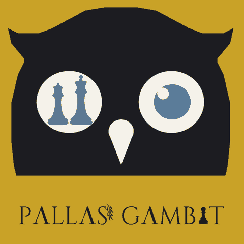

Гра за посиланням
Створіть партію й надішліть посилання другові. Реєстрація не потрібна.

Грайте в шахи з друзями за посиланням, проходьте подвиги Геракла й знайомтеся з героями, які стоять на дошці.
Створіть партію й надішліть посилання другові. Реєстрація не потрібна.
Розв’язуйте шахові задачі в 12 подвигах Геракла й відкривайте міфи.
Зевс, Афіна, Пегас та інші мають власні довідки про свою роль на дошці.